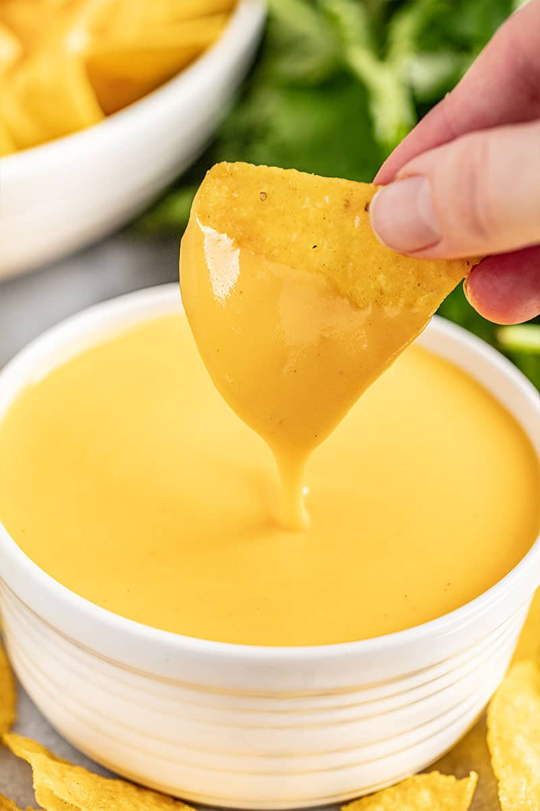

Nacho Cheese Sauce

Description:
This page will guide you in making a homemade nacho cheese sauce recipe that can be enjoyed whenever the feeling arises as this recipes is very quick and easy to make taking no longer than 5-10 minutes with almost no cooling time. It can be eaten immidiately.
Ingredients:
20g unsalted butter
5g flour
1/4 teaspoon of salt
1/4 teaspoon of chilli powder
10g of sugar
100ml of milk
70g of cheddar cheese
Steps to take:
On low heat melt the butter completely in a small pot
Then add the flour and mix well
Add the salt, sugar and chilli powder, then the milk immidiately and stir for 1 minute
Add the cheese and stir continously till the cheese has nmelted completely and fully emulsified in the pot
For a little extra flavour you can chope up some Jalepeno slices and add them into the mixture
Ready to serve, Enjoy